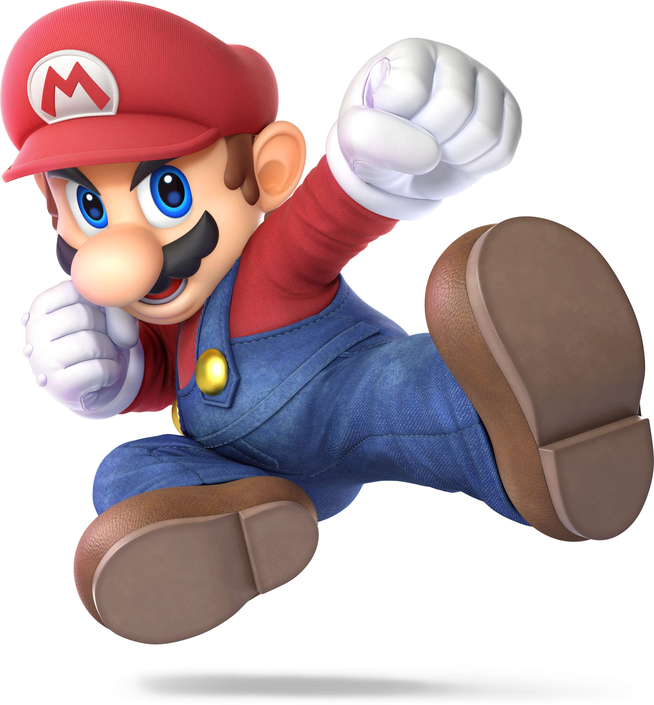
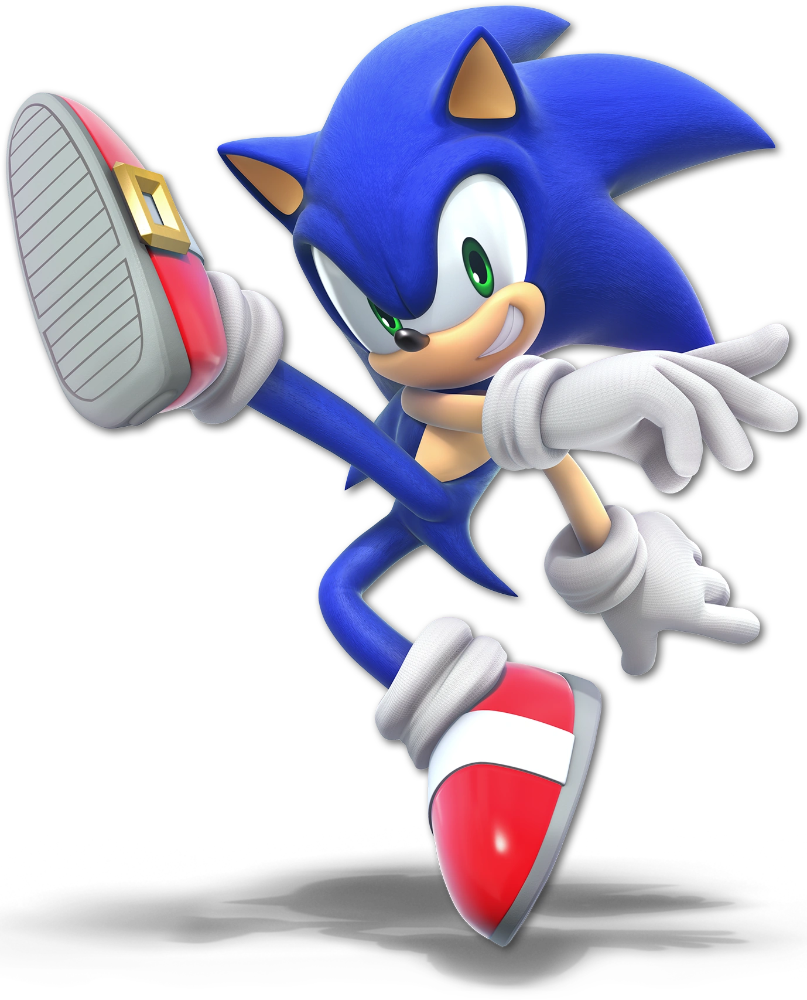
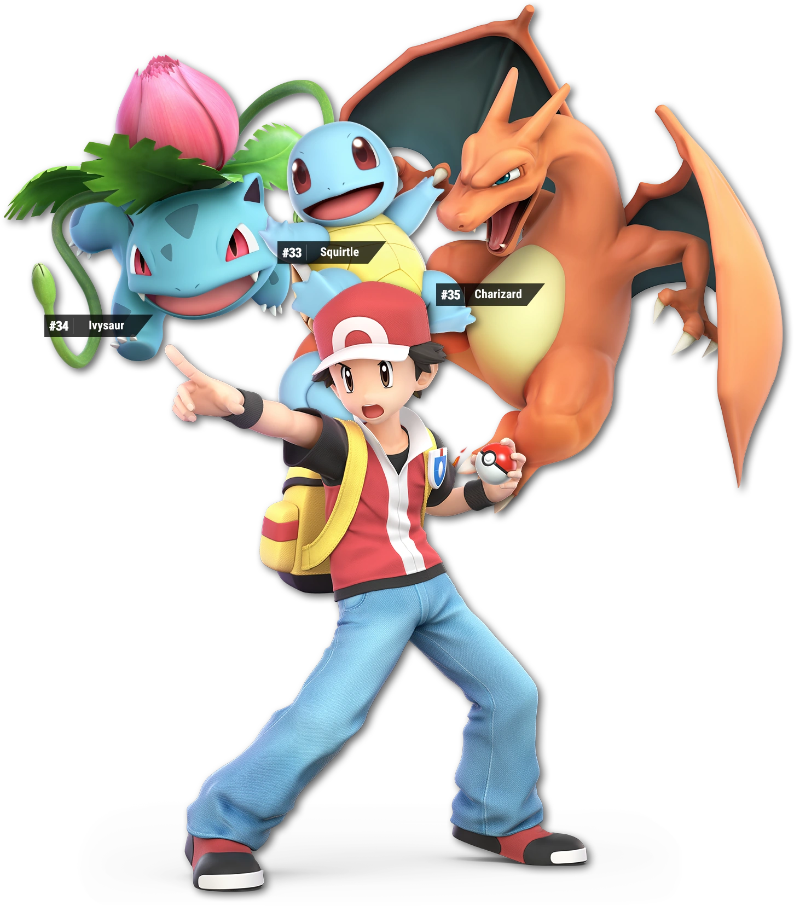
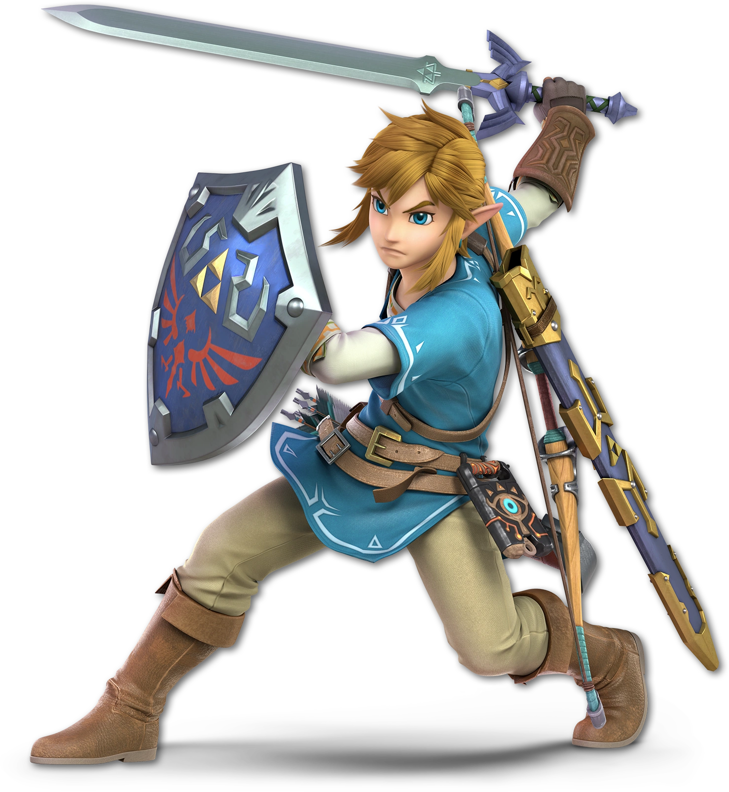
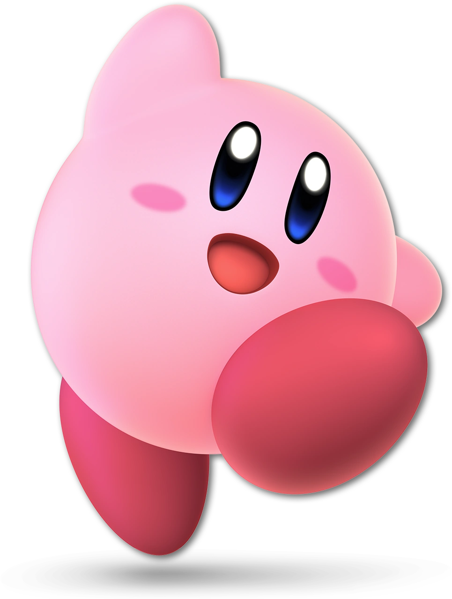

Mario
Mario, el emblemático fontanero de Nintendo, es uno de los personajes más destacados en la serie de juegos "Super Smash Bros." desde su inicio en 1999.
Habilidades y Movimientos:
Mario es un personaje equilibrado y versátil en el juego. Sus movimientos incluyen saltos, puñetazos y patadas icónicas. Utiliza varios poderes y objetos, como el martillo y la flor de fuego, para luchar contra sus oponentes.
Jugabilidad:
Mario es adecuado tanto para jugadores principiantes como experimentados debido a su facilidad de uso y versatilidad. Puede atacar cuerpo a cuerpo o a distancia, lo que le permite adaptarse a diferentes estilos de juego.

Sonic the Hedgehog
Sonic the Hedgehog, el famoso erizo azul de SEGA, se unió a la serie "Super Smash Bros." en el juego "Super Smash Bros. Brawl" y ha sido un personaje jugable desde entonces.
Habilidades y Movimientos:
Sonic es conocido por su velocidad extrema y su estilo de juego ágil. Sus movimientos se centran en ataques rápidos y evasivos. Puede rodar en una bola para cargar a través de oponentes y realizar ataques giratorios.
Jugabilidad:
Sonic se caracteriza por su movilidad y la capacidad de moverse rápidamente por el escenario. Su estilo de juego es ofensivo y se enfoca en aprovechar su velocidad para sorprender a los oponentes.

El Entrenador Pokemon
El Entrenador Pokémon, conocido como Pokémon Trainer en inglés, es un personaje jugable único en "Super Smash Bros." que representa a varios Pokémon en lugar de ser un luchador individual.
Habilidades y Movimientos:
El Entrenador Pokémon tiene la capacidad de alternar entre tres Pokémon: Squirtle, Ivysaur y Charizard. Cada uno de ellos tiene sus propios movimientos y habilidades distintas.
Squirtle:
Squirtle es rápido y ágil, con ataques acuáticos que le permiten moverse con rapidez y controlar el espacio.
Ivysaur:
Ivysaur es conocido por sus movimientos basados en plantas y su capacidad para controlar el escenario con ataques como la vid lanzadera y las hojas navaja.
Charizard:
Charizard es un Pokémon tipo Fuego y Vuelo que cuenta con poderosos ataques de fuego y vuelo. Es resistente y puede infligir daño considerable.
Jugabilidad:
El Entrenador Pokémon se destaca por su versatilidad al cambiar entre los tres Pokémon según la situación. Esta capacidad de cambio en medio de la batalla permite adaptarse a diferentes oponentes y estilos de juego.

Link
Link, el legendario héroe de la franquicia "The Legend of Zelda" de Nintendo, es uno de los personajes más emblemáticos en "Super Smash Bros." desde el primer juego de la serie.
Habilidades y Movimientos:
Link es conocido por su versatilidad en el combate. Utiliza una espada, un escudo y una variedad de objetos de su serie de juegos, como bombas y el arco y flechas. Su ataque especial hacia arriba, el "Tornado Espiral," le permite recuperarse en el aire.
Jugabilidad:
Link es un personaje equilibrado que se adapta bien a diferentes estilos de juego. Puede atacar cuerpo a cuerpo y a distancia, lo que le brinda una gran ventaja en la batalla.

Kirby
Kirby es una adorable y poderosa bola rosa que proviene de su propia serie de juegos, desarrollada por HAL Laboratory y publicada por Nintendo. Kirby es un personaje jugable en la serie "Super Smash Bros." desde su inicio.
Habilidades y Movimientos:
Kirby tiene una característica única en "Super Smash Bros." llamada "Habilidad de Tragar." Puede inhalar a sus oponentes y copiar sus habilidades especiales. Esta habilidad le permite adaptarse a una variedad de estilos de juego, ya que puede usar las habilidades de otros personajes.
Jugabilidad:
Kirby es un personaje versátil que puede volar brevemente y recuperarse fácilmente en el aire. Su capacidad de copiar habilidades lo convierte en uno de los personajes más impredecibles en el juego, ya que puede tomar las habilidades de otros luchadores en medio de la batalla.